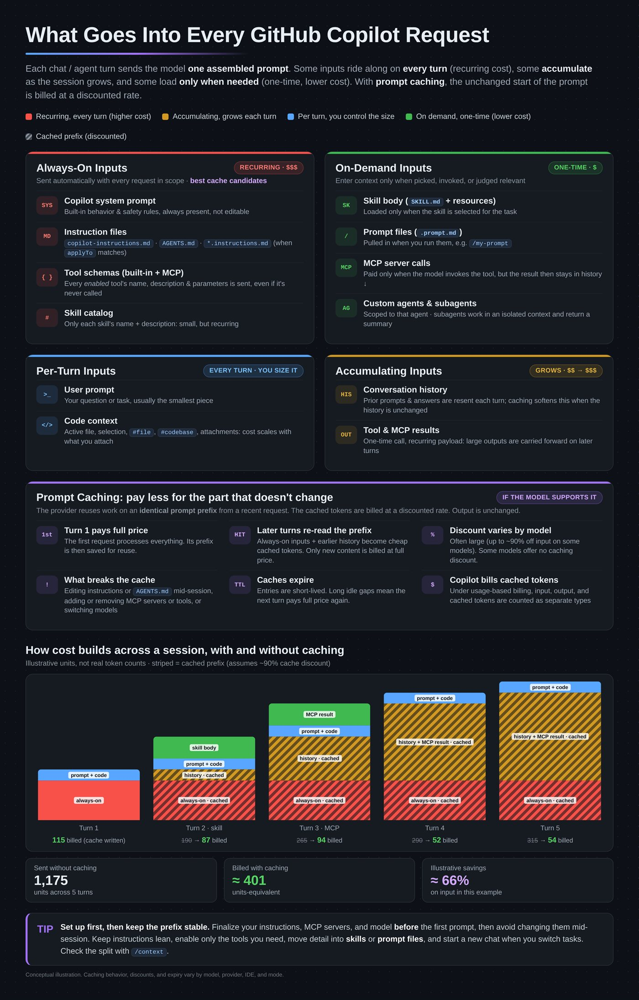

When Each Customization Enters Context
| Customization | Triggered | Cost pattern |
|---|---|---|
Custom instructions: .github/copilot-instructions.md, AGENTS.md, path-specific *.instructions.md, personal and organization instructions | Automatically, on every interaction in scope | Recurring |
| Enabled built-in and MCP tool schemas | Automatically advertised to the model | Recurring grows with tool count |
Prompt files (.github/prompts/*.prompt.md) | Manually, when you reference or pick one | On demand |
Agent skills (SKILL.md) | When Copilot judges the skill relevant, or you invoke it | On demand body loads only when used |
Custom agents (.github/agents/) | Selected from the agent picker, or delegated to | Scoped own instructions and tools |
| Subagents | Spawned by the main agent for delegated work | Isolated separate context window |
Hooks (.github/hooks/*.json) | At configured lifecycle events | Shell commands; output enters context only when returned |
flowchart LR
subgraph EVERY[Every turn]
INS[Instructions]
TOOLS[Tool schemas]
end
subgraph DEMAND[Only when used]
PF[Prompt files]
SK[Skills]
AG[Custom agents]
SUB[Subagents]
end
INS --> CTX[Main context]
TOOLS --> CTX
PF -.-> CTX
SK -.-> CTX
AG -.->|own context| X[Scoped context]
SUB -.->|own context| X
class INS,TOOLS warning
class PF,SK success
class AG,SUB accent
class CTX azure
class X neutral
Orange adds to every request. Green loads only when used. Purple runs in its own context instead of growing the main thread.

Key takeaway
Move detail out of always-on instructions into a path-scoped instruction, prompt file, skill, or custom agent. You keep the capability and remove it from every turn.
What Good Instructions Contain
Repository instructions are included on every run, so keep them short, specific, and grounded in behavior you have actually observed.
| Include | Avoid |
|---|---|
| Required frameworks, libraries, or patterns | Long, generic documentation |
| Known pitfalls the agent tends to repeat | AI-generated guidance that doesn't reflect your system |
| Output expectations (“be concise”, “only return code”) | One-off preferences or rarely used details |
| Team conventions the agent must follow | Overloaded instructions that make context noisy |
| Build, test, and lint commands | Detail that belongs in a scoped instruction, prompt file, or skill |
A path-specific instruction uses an applyTo glob so it loads only for matching files:
--- applyTo: "orders/report.py" --- Text reports use fixed-width columns. JSON reports serialize Decimal values as two-decimal strings.
/chronicle improve looks for friction in your session history and suggests instruction changes grounded in what actually went wrong.Prune Tools and MCP Servers
A full MCP server's tool catalog adds schemas to every request. Enable only the tool sets the task needs, and decide before the session starts: changing enabled tools mid-session invalidates the prompt cache.
| Where | How |
|---|---|
| VS Code | Select Configure Tools in the chat input to choose tools and MCP servers for the request. In custom agents, set a narrow tools list. |
| Copilot CLI: visibility | --available-tools and --excluded-tools control which tools the model can see. |
| Copilot CLI: approval | --allow-tool and --deny-tool control whether a visible tool runs without asking. Deny rules always win, even with --allow-all. |
| Copilot CLI: MCP | --disable-builtin-mcps, --disable-mcp-server NAME, and --add-github-mcp-toolset to widen the GitHub MCP server only when needed. |
Use /context to see the split between Custom Instructions, System Tools, MCP Tools, and Messages before you trim anything. /env lists the loaded instructions, MCP servers, skills, and agents, and /instructions toggles individual instruction files.
Subagents and repository instructions
In Copilot CLI, a custom agent spawned as a subagent doesn't receive copilot-instructions.md, AGENTS.md, or CLAUDE.md unless its frontmatter sets include-custom-instructions: true. Leave it off for agents that only search or summarize; turn it on for agents that must follow your conventions.
Next Steps
- Continue with Copilot Memory Hygiene.
- Trim a real instructions file and tool set in Lab 02, then narrow CLI tools in Lab 03.